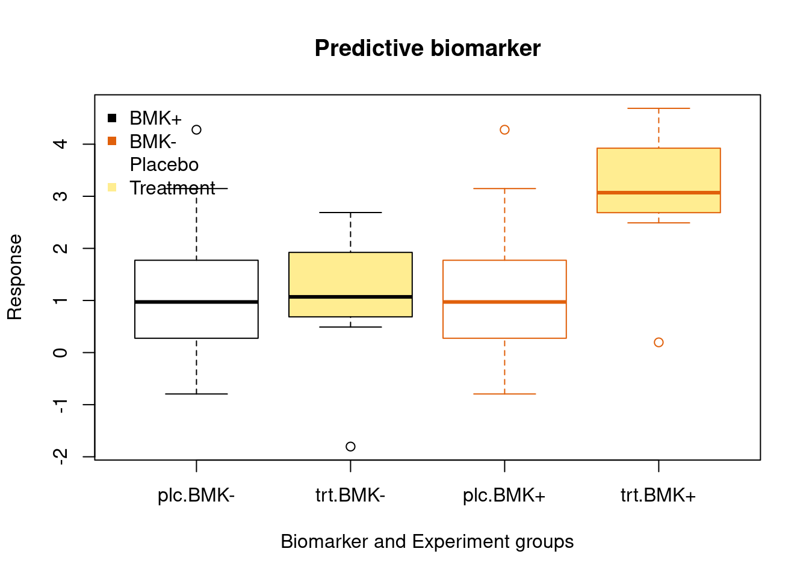

9 Power and sample size
9.3 Sample size calculation for calibration studies
9.3.1 1. Agreement between two measurements
- assess the agreement of two measurements
9.3.1.1 Inter-class correlation coefficient
- Pearson correlation
- Spearman correlation
\[ \frac{\sum_i\rho(G_{j}(Rseq), G_{j}(nano)))}{n_i} \]
- i - number of genes
- j - number of subjects
Need to visually examine if there exist ceiling and flooring effect between two measurements.
9.3.1.2 Intraclass Correlation Coefficient (ICC)
Generally speaking, the ICC determines the reliability of ratings by comparing the variability of different ratings of the same individuals to the total variation across all ratings and all individuals.
- A high ICC (close to 1) indicates high similarity between values from the same group.
- A low ICC (ICC close to zero) means that values from the same group are not similar.
The sample size is calculated based on following parameter:
- ICC0 - ICC of null hypothesis (e.g. 0 no agreement or a value based on previous observations)
- ICC - hypothetical ICC
- alpha at 0.05
- k = 2 (number of raters: nanostring vs. RNAseq)
- two tails
Example calibration between RNAseq and nanostring measurements
library(ICC.Sample.Size)
library(tidyr)
library(kableExtra)
library(dplyr)
sample <- rep(c("RNAseq", "nanostring"), 3)
genes <- matrix(rnorm(30), ncol = 6)
rownames(genes) <- paste0("gene", c(1:5))
colnames(genes) <- sample
kable(genes, digits = 2) %>%
add_header_above(c("", "ID1" = 2, "ID2" = 2, "ID3" = 2))| RNAseq | nanostring | RNAseq | nanostring | RNAseq | nanostring | |
|---|---|---|---|---|---|---|
| gene1 | 0.55 | -0.74 | -1.20 | -0.86 | 0.40 | 0.07 |
| gene2 | -2.79 | -0.69 | -0.13 | 0.26 | 0.18 | -0.82 |
| gene3 | -1.93 | 0.28 | -0.71 | -1.26 | 0.10 | -0.30 |
| gene4 | -1.45 | -0.42 | -0.57 | 0.06 | 1.06 | 0.25 |
| gene5 | 2.11 | 1.19 | 1.69 | -1.01 | -1.58 | 0.64 |
Statistical power at 80%, single tail
k2a005p08 <- calculateIccSampleSize(by = "both", tails = 1)
table_n <- k2a005p08[[2]]
knitr::kable(table_n,
caption = "Table of sample size (N) given null and alterative hythosis of ICC.") %>%
column_spec(2:12, color = ifelse(rownames(table_n) > 0.5, "red", 1)) %>%
add_header_above(c("", "ICC0" = 20)) %>%
pack_rows("ICC", 1, 20)| 0 | 0.05 | 0.1 | 0.15 | 0.2 | 0.25 | 0.3 | 0.35 | 0.4 | 0.45 | 0.5 | 0.55 | 0.6 | 0.65 | 0.7 | 0.75 | 0.8 | 0.85 | 0.9 | 0.95 | |
|---|---|---|---|---|---|---|---|---|---|---|---|---|---|---|---|---|---|---|---|---|
| ICC | ||||||||||||||||||||
| 0 | Inf | 2470 | 616 | 272 | 152 | 96 | 66 | 48 | 36 | 28 | 22 | 18 | 14 | 12 | 10 | 8 | 7 | 5 | 4 | 3 |
| 0.05 | 2470 | Inf | 2446 | 606 | 267 | 148 | 93 | 64 | 46 | 34 | 26 | 21 | 16 | 13 | 11 | 9 | 7 | 6 | 5 | 3 |
| 0.1 | 616 | 2446 | Inf | 2397 | 591 | 259 | 143 | 89 | 61 | 43 | 32 | 25 | 19 | 15 | 12 | 10 | 8 | 6 | 5 | 4 |
| 0.15 | 272 | 606 | 2397 | Inf | 2324 | 570 | 248 | 136 | 85 | 57 | 40 | 30 | 23 | 17 | 14 | 11 | 8 | 7 | 5 | 4 |
| 0.2 | 152 | 267 | 591 | 2324 | Inf | 2229 | 544 | 235 | 128 | 79 | 53 | 37 | 27 | 20 | 15 | 12 | 9 | 7 | 5 | 4 |
| 0.25 | 96 | 148 | 259 | 570 | 2229 | Inf | 2113 | 512 | 220 | 119 | 73 | 48 | 34 | 24 | 18 | 14 | 10 | 8 | 6 | 4 |
| 0.3 | 66 | 93 | 143 | 248 | 544 | 2113 | Inf | 1978 | 476 | 203 | 109 | 66 | 44 | 30 | 21 | 16 | 11 | 8 | 6 | 4 |
| 0.35 | 48 | 64 | 89 | 136 | 235 | 512 | 1978 | Inf | 1826 | 436 | 184 | 98 | 59 | 38 | 26 | 18 | 13 | 9 | 7 | 4 |
| 0.4 | 36 | 46 | 61 | 85 | 128 | 220 | 476 | 1826 | Inf | 1660 | 393 | 165 | 87 | 51 | 33 | 22 | 15 | 10 | 7 | 5 |
| 0.45 | 28 | 34 | 43 | 57 | 79 | 119 | 203 | 436 | 1660 | Inf | 1483 | 347 | 144 | 75 | 44 | 27 | 18 | 12 | 8 | 5 |
| 0.5 | 22 | 26 | 32 | 40 | 53 | 73 | 109 | 184 | 393 | 1483 | Inf | 1297 | 300 | 123 | 63 | 36 | 22 | 14 | 9 | 5 |
| 0.55 | 18 | 21 | 25 | 30 | 37 | 48 | 66 | 98 | 165 | 347 | 1297 | Inf | 1108 | 253 | 101 | 51 | 28 | 17 | 10 | 6 |
| 0.6 | 14 | 16 | 19 | 23 | 27 | 34 | 44 | 59 | 87 | 144 | 300 | 1108 | Inf | 918 | 205 | 80 | 39 | 21 | 12 | 6 |
| 0.65 | 12 | 13 | 15 | 17 | 20 | 24 | 30 | 38 | 51 | 75 | 123 | 253 | 918 | Inf | 732 | 160 | 61 | 28 | 14 | 7 |
| 0.7 | 10 | 11 | 12 | 14 | 15 | 18 | 21 | 26 | 33 | 44 | 63 | 101 | 205 | 732 | Inf | 555 | 117 | 42 | 18 | 8 |
| 0.75 | 8 | 9 | 10 | 11 | 12 | 14 | 16 | 18 | 22 | 27 | 36 | 51 | 80 | 160 | 555 | Inf | 393 | 79 | 26 | 10 |
| 0.8 | 7 | 7 | 8 | 8 | 9 | 10 | 11 | 13 | 15 | 18 | 22 | 28 | 39 | 61 | 117 | 393 | Inf | 251 | 46 | 13 |
| 0.85 | 5 | 6 | 6 | 7 | 7 | 8 | 8 | 9 | 10 | 12 | 14 | 17 | 21 | 28 | 42 | 79 | 251 | Inf | 134 | 20 |
| 0.9 | 4 | 5 | 5 | 5 | 5 | 6 | 6 | 7 | 7 | 8 | 9 | 10 | 12 | 14 | 18 | 26 | 46 | 134 | Inf | 49 |
| 0.95 | 3 | 3 | 4 | 4 | 4 | 4 | 4 | 4 | 5 | 5 | 5 | 6 | 6 | 7 | 8 | 10 | 13 | 20 | 49 | Inf |
9.3.2 2. Sample size for calibrations
9.3.2.1 The calibration function
The goal is to associate a test value (e.g. RNAseq) to a reference value (e.g. nanostring) via a calibration function. We collect N samples of paired measured: \(\{(X_i, Y_i), i = 1... N\}\), where \[ X_i = \tilde{X_i} + \epsilon_i^x \\ Y_i = \tilde{Y_i} + \epsilon_i^y\\ \tilde{Y_i} = f_0(\tilde{X_i}) +e_i \] where \(\epsilon_i^x ,\epsilon_i^y, e_i\) are zero mean errors with variance \(\sigma_i^{x2}, \sigma_i^{y2}, \sigma_0^2\)
In simple calibration function, we assume a linear function: \(f_0(x) = \beta_0+\beta_1X\). We want to estimage \(\beta_0, \beta_1\) to solve the calibration function.
Some considerations for calibration function:
- the variance of the measurement error often depends on the underlying level.
- standard deviation for the measurement error is proportional to the underlying value
- the CV (SD/mean) of themeasurement error is approximately a constant
therefore the estimate of variance, assuming: \[ \sigma_i^x = CV_x \times \tilde{X} \\ \sigma_i^y = CV_x \times \tilde{Y} \\ \]
For estimating parameters in calibration function see the reference paper for different senarios.
9.3.2.1.1 Sample size calculation for calictration
\[ N = max_{k=1..K}\bigg\{\frac{(2Z_{1-\alpha})^2\times \sigma^2(x_k)}{\delta_k^2}\bigg\}\\ \sigma^2(x_k) =(1, x_k)\sum\bigg(1, x_k\bigg) \]
\(\sum\) is variance, co-variance matrix for estimated intercept and slope of the calibration function. \(\delta_k, k = 1...K\) precision levels.
Parameters to consider before calculation:
- x0: x value plan to calibrate with estimated calibration equation (e.g. \(\beta_0=0, \beta_1=1\), and this never happens in reality)
- d0: 95% CI of calibrated x value
- x: emperical observation of targeted distribution (e.g. mRNA levels from RNA seq or from nanostring)
- CVx: coefficient variation of measurement X (e.g. nanostring), assume to be constant
- CVy: coefficient variation of measurement Y (e.g. RNAseq), assume to be constant
9.3.2.2 Sample size calculation examples
9.3.2.2.1 CVx= CVy = 0.2
x0 <- c(40, 50, 60, 70, 80, 90)
d0 <- c(5, 10, 20, 30, 40, 100)
calc_samplesize <- function(x0, d0, x =seq(5, 1000, length = 1000), CVx =0.2, CVy=0.2) {
CVcalibration::samplesize(x0, d0,
x = x, # assuming RNAseq raw count data
CVx = CVx, CVy = CVy
)
}
par(mfrow = c(2, 3))
lapply(d0, function(d) {
rst <- sapply(x0, function(x) calc_samplesize(x0 = x, d0 = d))
tab <- do.call("rbind", rst)
# rownames(tab) <- x0
ymin <- min(tab)
ymax <- max(tab)
plot(x0, tab[, 1],
type = "b",
ylim = c(ymin, ymax),
ylab = "N",
main = paste("d0=", d)
)
lines(x0, tab[, 3], lty = 3, type = "b", pch = 2)
legend("topright", c("1 CV known", "both CVs known"),
bty = "n",
lty = c(1, 3), pch = c(1, 2)
)
return(NULL)
})
9.4 Choosing samples range
There are two important considerations for choosing sampling methods: (i) the selected Xi values should cover the entire region of interest and (ii) the particular sampling scheme should help us to obtain an accurate estimate for the calibration function. There are several obvious choices:
randomly sampling from the stored samples (sample more from important regaions, but less accurate)
uniformly sampling from the given interval of interest (more accurate, less samples from important regions to investigate linear assumption) ;
a hybrid of the aforementioned two sampling methods (balance between above two):
- dividing the range of interest into intervals using the quantiles of the observed samples
- uniformly sampling equal number of Xi’s from each of the subintervals.
par(mfrow = c(1, 3))
set.seed(789)
x <- rnorm(500, 2)
x1 <- runif(500, -1, 5)
qt <- quantile(x)
x2 <- c(runif(100,qt[1], qt[2]), runif(100, qt[2], qt[3]), runif(100, qt[3], qt[4]), runif(100,qt[4], qt[5]))
hist(x, breaks =30, main ="random sampling")
hist(x1, breaks = 30, main ="uniform sampling")
hist(x2, breaks = 30, main = "hybrid sampling")9.4.1 Estimating coefficient variation (CV) within the same measures
- repeated measures in the same sample to obtain the estimation of CV in both techonologies
9.4.1.1 Consideration for prediction precision
Calibration can be viewed as a prediction model. Without any error measurement and assuming constant error variance, a linear model can be used: \[Y_i = a\beta X_i +b + \epsilon\]
Uncertainy will be considered when translating the cut-off from RNAseq data to Nanostring. It boils down to estimate with prediction the residual variance. When a sample of size \(n\) is drawn from a normal distribution, a \(1-\alpha\) CI of the unknown population variance is given by \[\frac{n-1}{\chi^2_{1-\alpha/2, n-1}}s^2 < \sigma^2 < \frac{n-1}{\chi^2_{\alpha/2, n-1}}s^2\] The fold change between the bounds (multiplicative margin of error) can be used as a precision proxy [4].
Formula can be adapted with \(p\) parameters [5]. Non linear relationship can be considered with a restricted cubic splines and k knots (k-1 parameters) We assume that k = 3f:
dat <- data.frame(
MMOE = c(1.1, 1.2),
linear = c(235, 71),
non_linear = c(238, 74)
)
knitr::kable(dat)| MMOE | linear | non_linear |
|---|---|---|
| 1.1 | 235 | 238 |
| 1.2 | 71 | 74 |
9.4.2 Final consideration for sample size
The sample size consideration should serve the purpose of analysis, which in our case is calibraion and agreement test. These two objectives might render different numbers. In order to gurantee the quality of prelminary analysis, we should take the max{N1, N2, N3}.
9.5 Reference
[1]T. K. Koo and M. Y. Li, “A Guideline of Selecting and Reporting Intraclass Correlation Coefficients for Reliability Research”, Journal of Chiropractic Medicine, vol. 15, no. 2, pp. 155-163, Jun. 2016, doi: 10.1016/j.jcm.2016.02.012.
[2]S. D. Walter, M. Eliasziw, and A. Donner, “Sample size and optimal designs for reliability studies”, Statistics in Medicine, vol. 17, no. 1, pp. 101–110, 1998, doi: 10.1002/(SICI)1097-0258(19980115)17:1<101::AID-SIM727>3.0.CO;2-E.
[3] L. Tian, R. A. Durazo-Arvizu, G. Myers, S. Brooks, K. Sarafin, and C. T. Sempos, “The estimation of calibration equations for variables with heteroscedastic measurement errors,” Statistics in Medicine, vol. 33, no. 25, pp. 4420-4436, 2014, doi: 10.1002/sim.6235.
[4]F. E. Harrell Jr., “Regression Modeling Strategies”. Springer International Publishing, 2016
[5]R. D. Riley, J. Ensor, K. I. E. Snell, et al. “Calculating the sample size required for developing a clinical prediction model”. BMJ. 2020